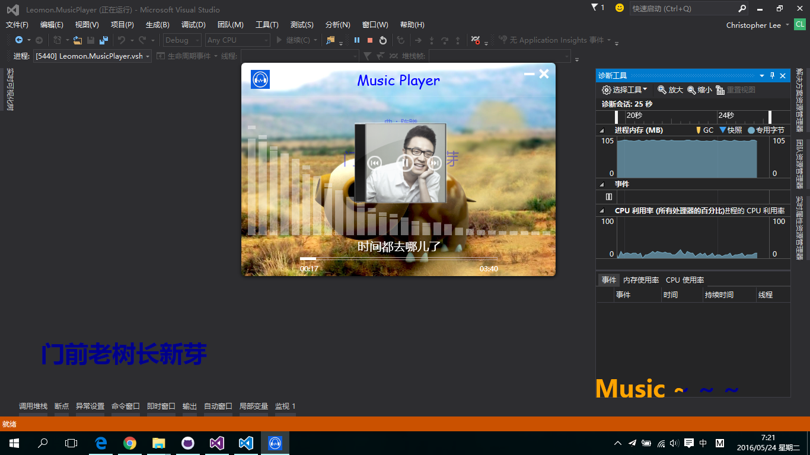
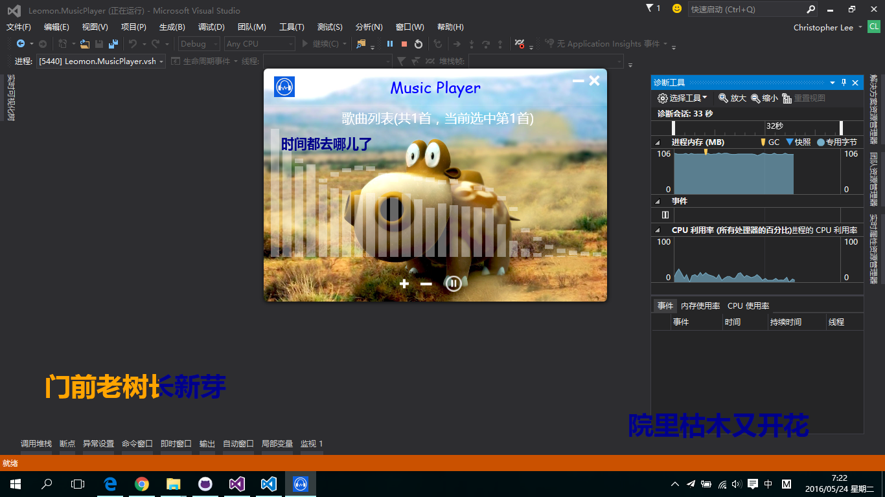
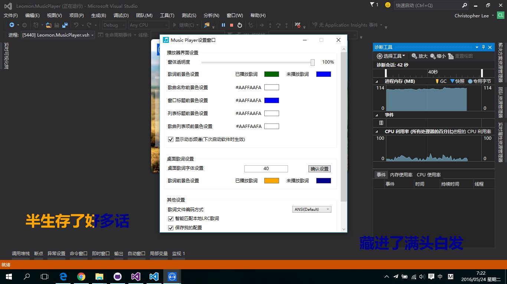

WPF音乐播放器
说明
- 一款简单的个人音乐播放器，基于
WPF C# .Net Framework 4.0开发； - 开发环境：
Visual Studio 2013； - 主要使用的第三方模块：
DoubanFM.Bass.dllBass.Net.dllbass.dllWPFSoundVisualizationLib.dll
- 播放器UI也是绞尽脑汁才想到的，之后花了很多功夫去完善。毕竟不是专业UI设计人员，所以不是很完美，希望你喜欢 :)
- 播放器在编写过程中，曾经遇到很多困难，但最终都克服了过来。期间参考了一些网友的设计理念，示例代码等，得到了很多帮助。但由于过去的的时间比较久了，不能一一列举出来，总之非常感激！
功能
常规功能
-
支持常见音频文件播放，支持基本的播放控制模式：
- 播放/暂停
- 曲目切换
-
支持的播放模式：
- 顺序播放
- 列表循环
- 随机播放
- 单曲循环
-
支持歌词文件（仅
lrc格式）加载及歌词显示功能：- 支持指定加载指定路径的歌词
- 支持自动加载歌曲同名歌词文件
- 支持播放器界面内滚动显示歌词和桌面歌词两种模式
支持从手动下载歌曲歌词功能
- 支持简单的歌曲搜索
其他功能
- 支持播放器界面透明度修改功能
- 支持自定义背景图片功能
- 支持自动以放映模式播放指定目录中的图片
- 还支持一些其他功能，详细请自行测试，参见软件设置对话框
- 支持记忆播放、歌曲列表自动保存功能
演示截图
- 
- 
- 
运行测试
- 请下载编译好的播放器程序，并解压到本地；
- 确保安装了
.Net Framework 4.0，然后双击其中的*MusicPlayer.exe运行即可。
编译开发
- 请将该Visual Studio项目下载到本地并解压；
- 推荐使用
Visual Studio 2013及以上版本打开项目解决方案文件Leomon.MusicPlayer.sln； - 成功打开后，请点击
启动按钮，开始编译工程代码；此时，必然会提示出现找不到一些命名空间等错误发生； - 在出现上述错误后，请见将
EssentialLibraries目录中的所有文件和文件夹拷贝到Debug（或者Release）目录下，然后，尝试重新编译即可。
注意
- 播放器依然有很多不够完美的地方，请见谅；
- 目前播放器只支持本地音频文件播放，可以考虑添加在线播放等功能；
- 播放器代码组织的不是很好，所以请取其精华，弃其糟粕。
贡献
- 播放器编写完成后，在百度贴吧——C#吧提供了下载链接，得到了一些网友的反馈，非常感激。
许可
Licensed under the MIT License. Enjoy it ~